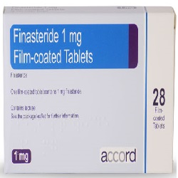

Finasteride

Finasteride သည္ ေယာက်ာ္းႀကီးမ်ားတြင္ အျဖစ္မ်ားေသာ ဆီးက်ိတ္ႀကီးေရာဂါတြင္ ဆီးက်ိတ္ကို ရႈံ႕ၿပီးေသးေစေသာ ေဆးျဖစ္သည္။
အသုံးဝင္ပုံ
- ဆီးမၾကာခဏ သြားခ်င္စိတ္ရိွျခင္း
- ဆီး ညွစ္ေပါက္ရျခင္း
- ဆီးက်န္သလို ခံစားရျခင္း
- ညဘက္ ဆီးထသြားရျခင္း စေသာ ဆီးက်ိတ္ၾကီးေရာဂါ၏ လကၡဏာမ်ားကို သက္သာေစသည္။
- ဆီးက်ိတ္ၾကီးေစေသာ DHT ေဟာ္မုန္း ကို ေလ်ာ့နည္းေစျခင္းျဖင့္ လုပ္ေဆာင္ေပးသည္။
- လကၡဏာမျပင္းထန္ေသာ ဆီးက်ိတ္ၾကီးေရာဂါတြင္ Finasteride သည္ ခြဲစိတ္ကုသျခင္းကို ေရွာင္လြဲေပးသည္။
သုံးစြဲပုံ
- အစာႏွင့္ျဖစ္ေစ အစာမပါသည္ျဖစ္ေစ ေသာက္ႏိုင္ေသာ ေသာက္ေဆး ျဖစ္သည္။
- ပုံမွန္အားျဖင့္ တစ္ေန႕တစ္လုံး တစ္ႀကိမ္သာ ေသာက္ရသည္။
- အခ်ိန္မွန္ေသာက္ရန္လိုသည္။
- ၆ လ မွ ၁ ႏွစ္ပုံမွန္ ေသာက္ေသာအခါ သိသာေသာ အက်ိဳးေက်းဇူးကို ခံစားရမည္။
ေဘးထြက္ဆိုးက်ိဳးမ်ား
- လိင္စိတ္ေလ်ာ့နည္းေစသည္။
- အမ်ဳိးသားမ်ားတြင္ လိင္ဆက္ဆံေသာအခါ ကနဦးသုတ္ရည္ၾကည္ အထြက္နည္းသည္။
- အေမႊးမ်ားရွည္ေစသည္။
- ရင္ဘတ္တြင္ အက်ိတ္မ်ားေပၚလာျခင္း။
- ႏို႔သီးေခါင္းမွ အရည္မ်ား စိမ့္ထြက္ျခင္း။
- ရင္သားႀကီးလာျခင္း
- ေဝွးေစ့နာျခင္း
- ဆီးမသြားႏိုင္ျခင္း စသည္တို႔ ရိွလာပါက ဆရာဝန္ႏွင့္ ျပပါ။
သတိျပဳရမည့္ အခ်က္မ်ား
- အမ်ိဳးသမီးမ်ားႏွင့္ ကေလးမ်ားတြင္ မသုံးစြဲရပါ။
- Finasteride သည္ အေရျပားကို စိမ့္ဝင္ႏိုင္သည္။ ထို႔ေၾကာင့္ ေဆး က်ဳိးပဲ့ျခင္း ရိွေနပါက ကိုယ္ဝန္ေဆာင္ အမ်ဳိးသမီးမ်ား မကိုင္တြယ္သင့္ပါ။
- ေမြးကင္းစ ကေလးငယ္မ်ား ထိမိပါက မ်ိဳးပြားအဂါၤ ပုံမမွန္ျခင္း ျဖစ္တတ္သည္။
- အသည္းေရာဂါ ဆီးက်ိတ္ကင္ဆာ ႏွင့္ ဆီးလမ္းေၾကာင္းျပသနာ ရိွေနပါက ဆရာဝန္ကို ေျပာျပေဆြးေႏြးရန္ လိုသည္။
ေဆးအာနိသင္
ဆီးက်ိတ္ကင္ဆာ ျဖစ္ႏိုင္ေသာ PSA ဟူေသာ ဓာတ္၏ေသြးတြင္း ပမာဏကို အေျပာင္းအလဲ ျဖစ္ေစသည္။
ေဆးအလြန္အကၽြံသုံးစြဲျခင္း
ေဆးကို အနည္းဆုံး ၆ လ မွ ၁ ႏွစ္ပုံမွန္ ေသာက္ရသည္။ ထို႕ေၾကာင့္ ေသြးစစ္ေဆးျခင္းကို ပုံမွန္ ျပဳလုပ္ျခင္းျဖင့္ ေဆးလြန္ျခင္းကို ကာကြယ္ႏိုင္သည္။
- ေဆးေတြကို ဘယ္ေဆးမဆို ဆရာ၀န္ ဒါမွမဟုတ္ တတ္ကၽြမ္းနားလည္တဲ့ က်န္းမာေရး၀န္ထမ္းေတြရဲ႕ ညႊန္ၾကားခ်က္အတိုင္း တိတိက်က် ေသာက္သင့္ပါတယ္။
- မိမိသေဘာနဲ႔ေဆးရပ္လိုက္တာမ်ဳိး မလုပ္သင့္ပါဘူး။
- ေဘးထြက္ဆိုးက်ဳိး ျပင္းျပင္းထန္ထန္ ခံစားရရင္ေတာ့ ဆရာ၀န္နဲ႔တိုင္ပင္ဖို႔ လိုအပ္ပါတယ္။
Source– ေဒါက္တာခ်စ္စႏီၵေက်ာ္